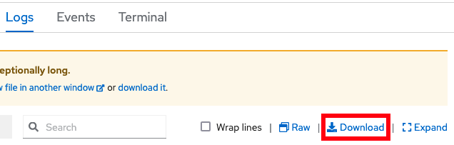

Lab: Reviewing OpenShift Application Logs
This lab covers how to review application logs in an OpenShift environment.
Theory
There are multiple ways to review application logs in an OpenShift environment:
- Using the
occommand line client:- View the native logs of the pod through the
oc logscommand. - View log files within a pod by starting a remote shell using the
oc rshcommand. - Download log files from a pod using the
oc cpcommand.
- View the native logs of the pod through the
- Using the OpenShift web console:
- View and/or download the native logs of the pod through the
Logstab on a pod. - View log files within a pod through the
Terminaltab on a pod.
- View and/or download the native logs of the pod through the
- Publish native logs of pods to OpenShift centralized logging using, most commonly, EFK, and then search logs in the Kibana log viewer. Optionally install sample Kibana dashboards created by the WebSphere team that summarize application log events and statistics.
- Gather a Liberty server dump using the WebSphere Liberty Operator that includes Liberty log files.
Lab: Review logs with the command line client or the OpenShift web console pod page
This lab will demonstrate how to review both application native logs (equivalent to the Liberty console.log) and the Liberty messages.log using the oc command line client or the OpenShift web console pod page.
This lab will take approximately 15 minutes.
Step 1: Install example application
Install the sample application.
Step 2: Review Application Logs
Using the command line
-
List the pods for the example application deployment; for example:
oc get podsExample output:
NAME READY STATUS RESTARTS AGE libertydiag-b98748954-mgj64 1/1 Running 0 97s -
Print the native logs of the pod by replacing
$PODwith the pod name from the previous command. The native logs are equivalent to the Libertyconsole.login a non-cloud deployment.oc logs $PODFor example:
oc logs libertydiag-b98748954-mgj64 -
Open a shell into the pod by replacing
$PODwith the pod name from the previous command:oc rsh -t $PODFor example:
oc rsh -t libertydiag-b98748954-mgj64 -
Copy and paste the following command and press
Enterto print the full Libertymessages.log:cat /logs/messages.log -
Alternatively, if you want to download a file to your computer, exit out of the
rshsession and downloadmessages.logby replacing$PODwith the pod name from the previous command:oc cp $POD:/logs/messages.log messages.logFor example:
oc cp libertydiag-b98748954-mgj64:/logs/messages.log messages.log
Using the browser
- In the
Topologyview of theDeveloperperspective, click on thelibertydiagcircle, then click theResourcestab in the drawer on the right, and then click onView logsfor the one pod that's running. TheView logsoutput is equivalent to the Libertyconsole.login a non-cloud deployment.

- You can also download the native logs using the Download button:
 - Note that the browser can only download native logs; it cannot download arbitrary logs from the container filesystem. Instead, you can
catthe logs through theTerminal. - Click on the
Terminaltab to open a remote shell into the running container in the pod:

- Copy and paste the following command and press
Enterto print the full Libertymessages.log:cat /logs/messages.log
Summary
In summary, this lab demonstrated how to install a sample application and review its logs.